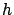

En el caso de que no haya LOS la pérdida básica de transmisión se
compone de la pérdida en espacio libre
((5.4)), la pérdida por difracción en múltiples
cuchillos () y la pérdida por difracción desde el techo de
los edificios a la calle (). De esta forma:
La determinación de se basa en el principio dado por el
modelo de Ikegami [25] pero con una función distinta de la
orientación de la calle. La geometría se muestra en las figuras
5.3 y 5.4.
Cabe aclarar que es un factor que fue estimado de un
número pequeño de medidas.
La pérdida por difracción en múltiples cuchillos fue estimada por
Walfisch y Bertoni para el caso en que la radiobase está por encima
de los techos (). Esto fue extendido por COST para el caso en
que la antena está por debajo de la altura media de edificaciones,
usando una función empírica basada en medidas. Las ecuaciones
relevantes son:
El término representa el aumento en la pérdida de
propagación cuando la radiobase está por debajo de la altura de los
techos. Los términos y consideran la dependencia de la
pérdida de difracción con la distancia y la frecuencia,
respectivamente. Si no se dispone de datos exactos se recomienda
tomar:
m(número de pisos)altura del techo
altura del techo
a m
^&cir#circ;
La aplicación del modelo de COST se restringe a los siguientes
rangos de parámetros:
Da buenos resultados cuando la antena de la radiobase está por
encima de los techos, produciendo errores con una media de 3dB y
desviaciones estándar en el rango de 4-8 dB. Sin embargo, la
performance se deteriora cuando se aproxima a  y es
bastante pobre cuando .
Siguiente:Modelo MOPEM Subir:Modelo COST231 Walfisch-Ikegami Anterior:Caso LOSÍndice General
SAPO